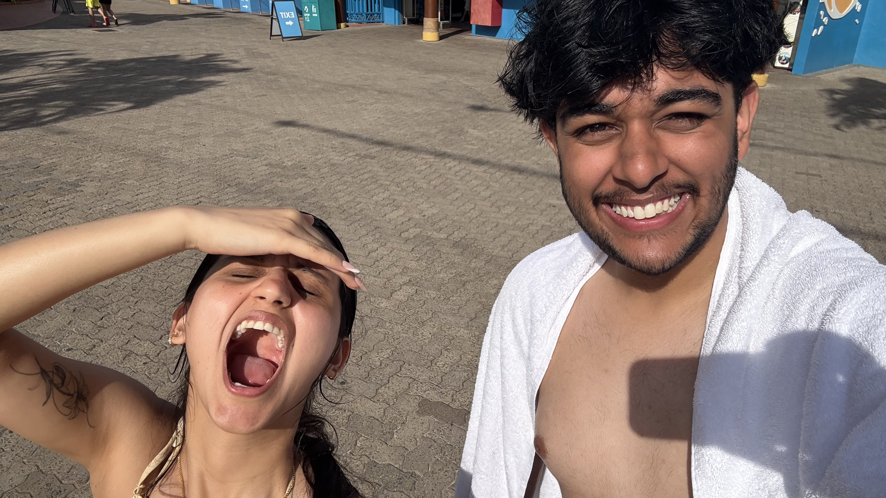
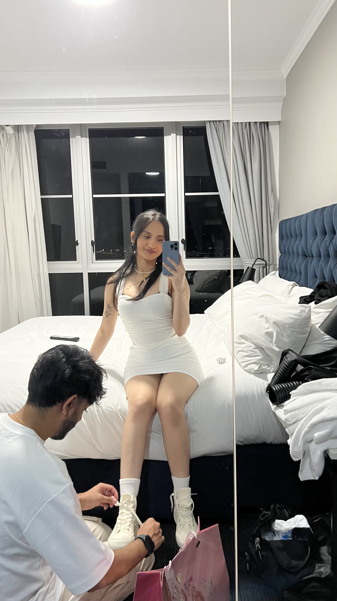

🌸 Happy Girlfriend’s Day 🌸
Hello my gorgeous beautiful girl, today’s your special day!! No it isn’t September 23 yet but it’s actually Girlfriend’s Day 🥳
I know this is a very special day for you, and I want to do my best to make sure it feels that way to you, the same way you have made every day of my life feel special since before you were even my girlfriend.
Going back exactly two years ago and skipping to the end of the month was when life got so much better, and then when I officially got to become your boyfriend is when it hit a whole new level.
You’ve been such an amazing and supportive girlfriend and it’s been such an amazing journey so far. You deserve all the happiness in the world, and you deserve every good thing that life can send your way.
You've been extremely caring, considerate, and compassionate for as long as I've known you, and every part of me wishes I got to experience you and all of these amazing qualities so much earlier. That feeling makes me realise just how much I want to be a part of your life forever. Being so close to you whilst you experience life is something I will forever cherish, and want to continue enjoying.
I care about you an insane amount and want to do everything I can to make that known. Everytime you feel like that is lacking, I want you to talk to me about it, because believe me it is never intentional. I'll listen, and work on myself to be the best possible person for you in every area you bring up because you are worthy of that.
You are worthy of someeone who treats you exactly how you want to be treated because you're such a nice and genuinely caring soul.
I want you to be reassured that I care about you so much that I am willing to do everything it takes to make sure you feel this way.
I feel so grateful getting to call myself your boyfriend. I've misssed you a lot whilst you've been gone, and I wish I could meet you today, but this will have to suffice for now 😓 I miss cuddling you and kissing you and holding your hand, I miss seeing your pretty face and I miss us going out, and can't wait to start seeing you more again 😭
BUT BEING ABLE TO CALL YOU MY GIRLFRIEND IS THE BEST THING ABOUT GIRLFRIEND'S DAY BECAUSE I ACTUALLY HAVE SOMEONE TO SAY IT TO 🥳
I hope you have a very special, lovely, wonderful day. This day is about you, and although we gotta celebrate it like this over the internet this year, let's hope I get to spoil my pretty girl the way she deserves next year 😛
Happy Girlfriend's Day Sampada!!!
